Как читать авторский курс и нормативные материалы
Это учебные материалы, а не заключение о соответствии конкретного продукта. Организационные модели курса отделяйте от терминов стандарта: ППК в опубликованном проекте — машиночитаемый перечень, а живой реестр его версий является практикой сопровождения. Термин OSA в разных материалах имеет разный охват. Статус и обязательность нормативного документа проверяются отдельно; проект КАПО опубликован как проект первой редакции.
Конспект: ориентация в курсе и карта решений
Зачем модуль
Самая частая ошибка новичка — спутать инструмент, дисциплину и результат. Человек запускает «сканер», получает список из 800 строк и не понимает, что с ним делать, потому что не задал себе исходный вопрос. А вопросов на самом деле четыре, и они разные: что у меня внутри?, есть ли в этом известные уязвимости?, можно ли это легально поставлять? и безопасно ли вообще тащить эту зависимость извне? Этот модуль даёт навигацию: связать каждый вопрос с дисциплиной (SCA или OSA), с конкретным выходным артефактом и с ролью, которая за артефакт отвечает. Без такой карты курс распадается на 17 несвязанных тем, а проект — на хаотичные прогоны утилит.
Модуль решает и вторую задачу — научить пользоваться материалом. Курс построен слоями: на каждый модуль есть конспект (теория с примерами), план занятия (как провести), практическая работа (что сделать руками), контрольные вопросы (самопроверка) и чек-лист «что проверять на проекте» (взгляд аудитора). Отдельно лежат практики Пxx (пошаговые упражнения с инструментами), нормативка (раздел 05) и шаблоны/регламенты (раздел 08). Связи [[...]] сшивают всё это: из конспекта вы попадаете в нужную практику, из практики — в шаблон отчёта, из шаблона — в требование стандарта. М00 показывает, как читать эту сеть и где начинать под свою задачу.
Ключевые идеи
SCA и OSA — это не синонимы. SCA (Software Composition Analysis) смотрит внутрь уже имеющегося артефакта: разбирает состав, сопоставляет компоненты с базами уязвимостей и лицензий. OSA (Open Source Analysis, в нашей трактовке — контроль поступления и происхождения) смотрит на входе: можно ли вообще пускать этот пакет в контур, откуда он, кто его собрал, нет ли protestware/typosquatting. SCA отвечает «что уже есть», OSA — «что мы впускаем». Один и тот же пакет проходит через обе дисциплины в разные моменты: OSA решает, впустить ли его в контролируемый репозиторий, а SCA позже учитывает его в составе релиза и проверяет на уязвимости и лицензии.
Маршрут обучения зависит от задачи. Полный трек идёт по Главной карте от М01 (термины и границы) до М16 (SBOM для AI и контейнеры). Но если задача узкая, удобнее «быстрый старт»: команде, которой срочно нужен только состав релиза и затрагивающие его CVE, достаточно цепочки М01 → М02 → М06 с практиками П03 и П35. Лицензии (М07), C/C++ legacy (М09), поставку от нескольких исполнителей (М10) и OSA (М08) подключают тогда, когда они реально присутствуют в продукте.
Каждый вопрос имеет канонический артефакт на выходе. Это и есть карта решений:

Артефакт ≠ файл сканера. SBOM/ППК — это факт о составе. VDR — реестр уязвимостей по релизу, а VEX — отдельное решение по каждой («не затронуты», «исправлено», «под расследованием»). Юридическое заключение — не строка лицензии, а вывод юриста с обоснованием. Readiness — управленческая сводка, собирающая всё это в «да/нет к поставке».
Роли разведены по решениям. Разработчик/соисполнитель порождает состав; инженер SCA отвечает за качество координат и triage; юрист закрывает лицензии; владелец продукта/риск-офицер принимает риск и подписывает readiness. Кто принимает решение — фиксируется заранее (см. RACI), иначе VDR превращается в свалку без владельца.
Как выглядит на практике
Маршрутная таблица, с которой стоит начинать любой запрос на проекте:
| Вопрос | Дисциплина | Артефакт | Кто решает | Модуль / практика |
|---|---|---|---|---|
| Что внутри релиза? | SCA | SBOM / ППК | инженер SCA | М02, П03 |
| Есть ли CVE? | SCA | VDR + VEX | инженер SCA | М06, П09 |
| Лицензионная чистота? | SCA | юр. заключение | юрист | М07, П27 |
| Можно ли впускать пакет? | OSA | вердикт допуска + provenance | OSA/безопасность | М08, П17 |
| Готов ли релиз к поставке? | оба | readiness-сводка | владелец продукта | П29 |
Слепые зоны именно этой темы
Где спотыкаются на старте - «Сделаем SBOM и закроем тему». SBOM — это вход для уязвимостей, лицензий и readiness, а не финальный артефакт сам по себе. - Путают VDR и VEX. VDR фиксирует факт (нашли CVE-XXXX), VEX фиксирует решение (этот CVE нас не затрагивает). Без VEX VDR не уменьшается и теряет смысл. - OSA сводят к «ещё одному сканеру». OSA — это политика допуска на входе, а не повторный поиск CVE внутри. - Нет роли-решателя. Артефакт есть, а кто по нему принимает решение — не назначено; readiness подписать некому.
Связь с нормативкой
Базовый словарь и требования к выходным артефактам заданы в ГОСТ Р 56939-2024 и NIST SP 800-218 (SSDF); минимальный состав SBOM — NTIA Minimum Elements и CISA. Зонтичный процесс описан в Регламенте композиционного анализа ПО, распределение решений — в RACI для SCA/OSA процесса.
Что уносим в работу
- Перед любым прогоном утилиты сформулировать вопрос и по карте назвать целевой артефакт.
- Закрепить за каждым артефактом роль-решателя (RACI), а не только исполнителя.
- Не считать SBOM финалом — он вход для VDR/VEX, лицензий и readiness.
- Спланировать маршрут: быстрый старт (М01→М02→М06) или полный трек по Главной карте.
- Свести всё в одну точку: П29. Readiness dashboard и П36. Итоговый мини-проект.